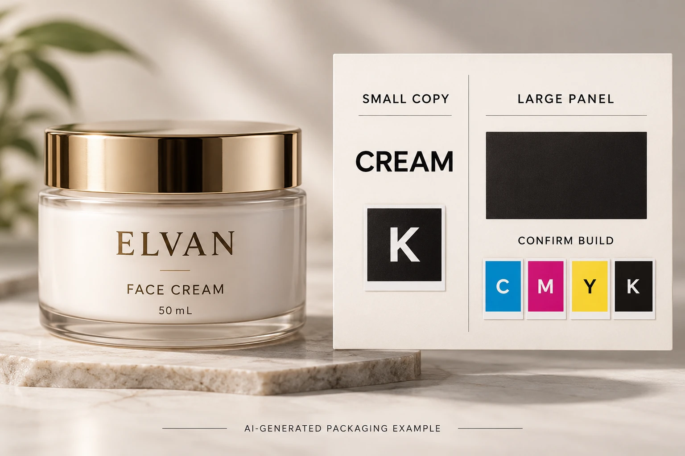

Inventory the different jobs black performs
Open the current design and mark small body text, the brand mark, thin rules, a broad dark panel and any machine-readable symbol. Identify which elements are live text, vector artwork or part of a raster image. A document can contain several different black constructions even though all look similar at normal screen size.
Ask the designer to report the relevant object colors and the printer to confirm how they should reach production. An imported logo or placed photograph may not follow the same color setup as text created directly in the layout.
Do not change barcode colors as part of a general black cleanup. That symbol has its own specification and finished-pack checks. Refer to the barcode approval guide and keep its responsible review attached to the same final file.
Inspect channels before discussing the darkest appearance
Adobe's Output Preview documentation provides separation inspection and a rich-black warning. Those tools help locate how objects are built; they do not supply the appropriate recipe for your label.
Have an authorized designer or prepress operator inspect the actual exported PDF, not just the source application's swatch name. Record the object and channels observed. If the file is corrected, inspect the replacement export rather than assuming the source change arrived intact.
Keep channel build separate from overprint behavior. An object can have an identified black build and still need an independent decision about what happens over another color. The overprint review guide covers that related output task.
Nor does a clean channel report prove the final black has the intended density, gloss or contrast. Physical appearance belongs to the construction and relevant print reference. The color-matching guide explains the broader reference discussion.
Let small detail and broad coverage make different demands
Consider a hypothetical back label with compact black copy. The priority is an unambiguous, reproducible text instruction for that process. Ask whether a single-channel treatment is intended and what any exception means for the small details. Do not quietly convert an approved production element because another designer prefers a different on-screen black.
A large decorative black panel poses a different appearance question. The printer may propose a different build or a particular ink route to achieve the supported result. Ask which construction the proposal covers, what evidence represents it and whether it changes the quotation or finishing discussion.
Either project may contain both situations. The choice is not that one label must be entirely single black or entirely rich black. Identify roles and let prepress explain the proposed object-level arrangement.
Also keep specialty ink terminology clear. A black-looking spot ink, process black and a multichannel process construction are not interchangeable merely because their preview is dark. The receiving workflow must acknowledge which is intended.
Use an object-to-channel review table
The following is an editorial handoff aid. It is not a color formula or a certified preflight report.
| Object | Review input | Required answer |
|---|---|---|
| Small copy | Exact location and final-size artwork | Intended channels and any process-specific restriction |
| Large panel | Area, stock, white backing and finish | Supported build and appearance reference |
| Imported logo | Source reference and observed PDF colors | Keep, replace or correct with brand approval |
| Technical symbol | Owner specification and final location | Separate symbol review, not automatic recoloring |
| Overlap | Background objects and output intent | Whether the accepted black treatment also has correct overlap behavior |
| Release | Export reference and prepress acknowledgement | Which file contains the accepted changes |
Begin with the current export. Mark the significant objects, collect the observed channel information, obtain prepress's intended treatment and identify any brand-visible change. Have the designer make approved corrections, then review the replacement PDF and the relevant physical appearance reference.
If nobody can identify whether a dark logo is a raster asset or a spot-color object, keep that element pending. A photograph of a nice black jar cannot settle the file question. If the change alters text, contrast or a technical symbol, obtain the appropriate review before release.

Preserve the agreed treatment on later revisions
A small copy amendment can reintroduce different object colors through a paste operation or replaced asset. Record the accepted treatment in the job's artwork notes, then check the affected element when the file changes. Avoid rebuilding every unchanged object without a reason.
For custom cosmetic labels, send the container, finished label size, quantity per design and current export with the black objects marked. Ask the receiving printer to confirm the build, output behavior and relevant appearance evidence. Use the inquiry form to prepare the message and send references separately through email or WhatsApp. The decision should finish with an identified file, not a color recipe copied into an email with no context.